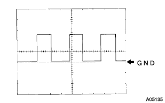

Meter & Gauge System Terminals of ECU |
Input/Output Signal Inspection
Using SST (Toyota electrical tester), with the connector connected, apply the tester probes from the back side of the vehicle wire harness connector and measure the voltage and resistance of each terminal.
| Terminal Symbol (Terminal No.) | Input/Output | Measurement Condition | Specified Condition |
|---|---|---|---|
| 1 (WRNP) ←→ Body ground | Output | IG ON, front passenger seat occupied, seat belt not fastened → fastened | 1V or less ←→ 11 to 14V → 11 to 14V |
| 3 (-) ←→ Body ground | - | Always | Below 1 Ω |
| 4 (+) ←→ Body ground | Input | Beam indicator light off → on | 1V or less → 11 to 14V |
| 5 (B) ←→ Body ground | Input | Turn RH indicator light blinking → off | 1V or less ←→ 11 to 14V → 1V or less |
| 6 (B) ←→ Body ground | Input | Turn LH indicator light blinking → off | 1V or less ←→ 11 to 14V → 1V or less |
| 9 (TX1+) ←→ Body ground | - | Always | Below 1 Ω |
| 10 (E) ←→ Body ground | - | Always | Below 1 Ω |
| 12 (PKBI) ←→ Body ground | Input | IG ON, front passenger seat occupied, seat belt not fastened → fastened | 11 to 14V → 1V or less |
| 13 (TX-) ←→ Body ground | Input/Output | Engine stopped, IG ON | Pulse Generation |
| 14 (TX1-) ←→ Body ground | Input/Output | Engine stopped, IG ON | Pulse Generation |
| 16 (FOG) ←→ Body ground | Input | Front fog light indicator light on → off | 11 to 14V → 1V or less |
| 18 (S) ←→ Body ground | Input | Rear fog light indicator light on → off | 11 to 14V → 1V or less |
| 19 (LVWG) ←→ Body ground | Input | IG ON, headlight leveling warning light on → off | 1V or less → 11 to 14V |
| 20 (EFI) ←→ Body ground | Input | IG ON, check engine warning light on → off | 1V or less → 11 to 14V |
| 21 (SW1) ←→ Body ground | Output | IG ON, steering switch OFF → ON | 11 to 14V → 1V or less |
| 23 (TEMP) ←→ Body ground | Input | IG ON, outside temperature 25°C | Approx. 1.6V |
| 24 (ILL+) ←→ Body ground | Input | Headlight dimmer switch TAIL → OFF | 1V or less → 11 to 14V |
| 25 (L) ←→ Body ground | Input | Fuel F (full) → E (empty) | 1V or less → 4.5 to 9V |
| 27 (CANH) ←→ Body ground | Input/Output | Engine stopped, IG ON | Pulse Generation |
| 28 (CANL) ←→ Body ground | Input/Output | Engine stopped, IG ON | Pulse Generation |
| 30 (ET) ←→ Body ground | - | Always | Below 1 Ω |
| 32 (B) ←→ Body ground | Input | Always | 11 to 14V |
| 33 (IG+) ←→ Body ground | Input | IG OFF → IG ON | 1V or less → 11 to 14V |
| 35 (SI) ←→ Body ground | Input | IG ON, driving at approximately 20km/h | Pulse Generation (Waveform 1) |
| 36 (+S) ←→ Body ground | Output | Driving at approximately 20km/h | Pulse Generation (Waveform 1) |
| 38 (S) ←→ Body ground | Input | IG ON, engine oil pressure warning light on → off | 1V or less → 11 to 14V |
| 39 (CHG-) ←→ Body ground | Input | Engine started, charge warning light on → off | 1V or less → 11 to 14V |
| 40 (SW) ←→ Body ground | Input | IG ON, brake fluid warning light on → off | 1V or less → 11 to 14V |
 |
Waveform 1
| Item | Description |
|---|---|
| Measurement Terminal | +S, SI ←→ Body ground |
| Tool Setting | 5V/DIV、20ms/DIV |
| Measurement Condition | Driving at approximately 20km/h |